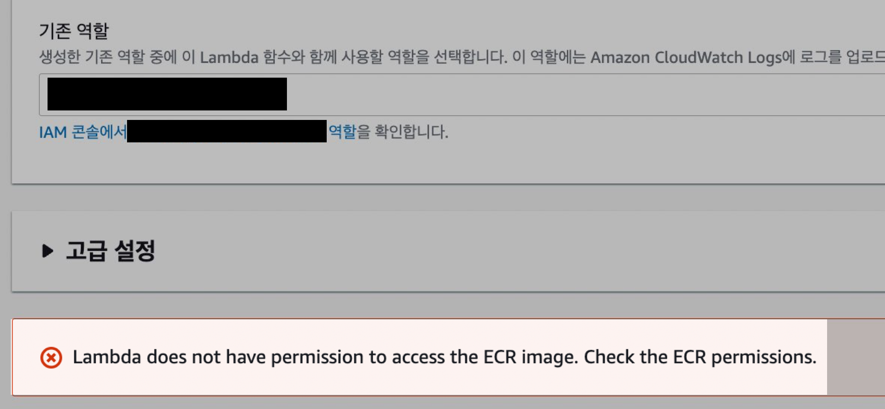
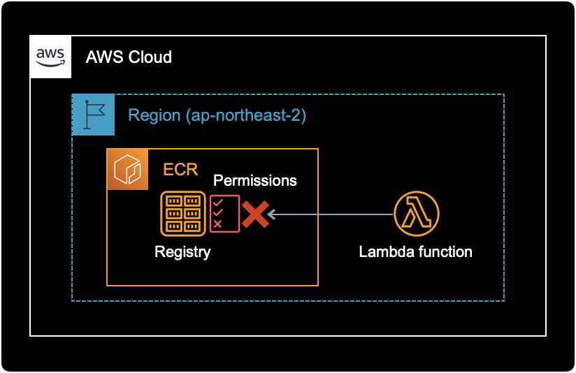
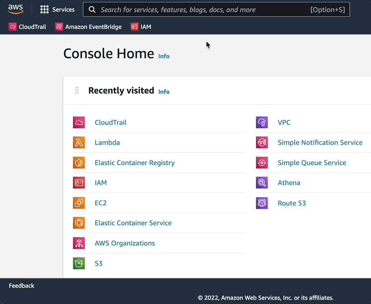
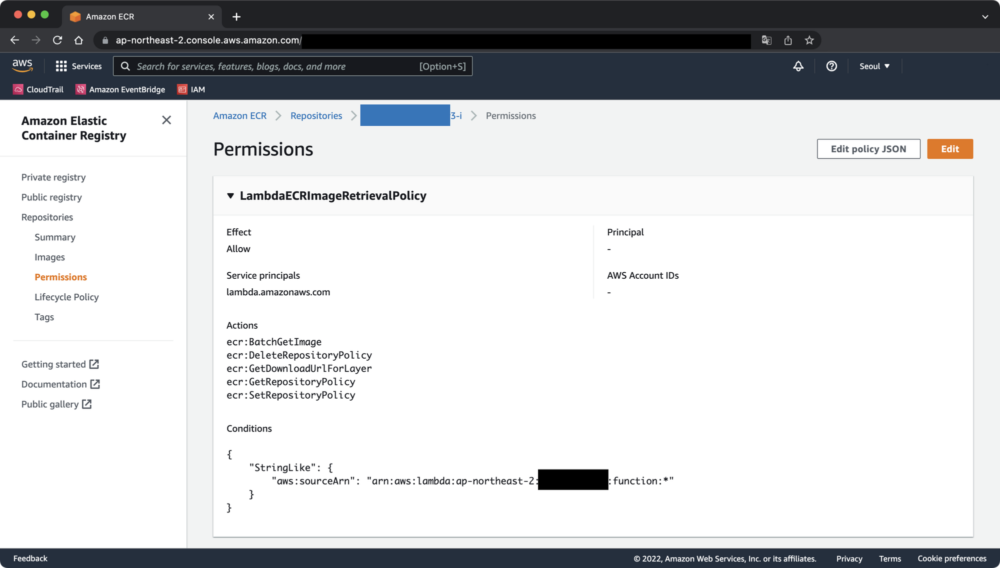
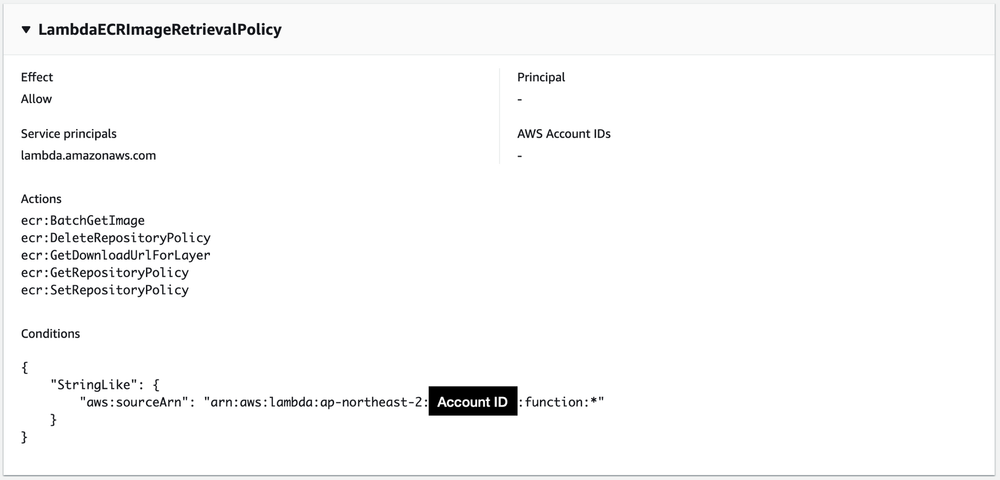
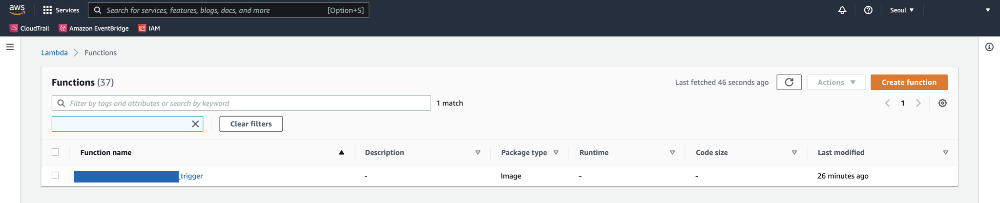

Check the ECR permission
증상
Lambda function을 생성할 때 ECR 권한 에러 메세지가 출력되며 생성이 불가능한 증상.

에러 메세지
람다가 ECR Image에 접근할 권한이 없으니, 먼저 ECRElastic Container Registry의 권한을 확인해보라고 알려주고 있다.
Lambda does not have permission to access the ECR image. Check the ECR permissions.
원인
에러 메세지에 이미 정답이 있었다. 이래서 로그의 중요성을 절대 간과해서도 의심해서도 안된다.
ECRElastic Container Registry에 Lambda function 접근을 허용해주는 Permission이 등록되어 있지 않았다.

Lambda function이 ECR에 접근해 컨테이너 이미지를 받아올 때, 권한이 거부되어 실패하는 것이다.
해결방법
Lambda function이 접근할 수 있도록 ECR Repository에서 권한Permissions을 수정한다.
상세 조치방법
람다 전용 IAM Role 생성
Lambda function에 부여할 IAM Role을 생성한다.
이 IAM Role에는 Lambda function이 ECR에 인증을 받고, Repository에 접근해서 컨테이너 이미지를 받아오고 이미지 목록을 확인할 수 있는 권한이 부여되어 있다.
{
"Version": "2012-10-17",
"Statement": [
{
"Sid": "LambdaToECR1",
"Effect": "Allow",
"Action": [
"ecr:SetRepositoryPolicy",
"ecr:BatchGetImage",
"ecr:CompleteLayerUpload",
"ecr:Get*",
"ecr:Describe*",
"ecr:UploadLayerPart",
"ecr:ListImages",
"ecr:InitiateLayerUpload",
"ecr:BatchCheckLayerAvailability",
"ecr:PutImage"
],
"Resource": "arn:aws:ecr:ap-northeast-2:ACCOUNT_ID:repository/REPOSITORY_NAME"
},
{
"Sid": "LambdaToECR2",
"Effect": "Allow",
"Action": "ecr:GetAuthorizationToken",
"Resource": "*"
}
]
}
Resource 값의 리전 ap-northeast-2, ACCOUNT_ID, REPOSITORY_NAME 값은 자신의 환경에 맞게 바꾸자.
ECR 권한 설정
AWS Management Console에 로그인 한 다음, ECRElastic Container Registry 서비스로 들어간다.

그후 Lambda function를 연결할 ECR 레포지터리를 선택한다.

Amaozn ECR의 컨테이너 이미지와 동일한 계정에 있는 Lambda Function의 경우 Amazon ECR 레포지토리에 권한을 추가해줘야 한다. 다음 예는 ECR 레포지터리의 최소 권한 정책을 보여준다.
{
"Version": "2008-10-17",
"Statement": [
{
"Sid": "LambdaECRImageRetrievalPolicy",
"Effect": "Allow",
"Principal": {
"Service": "lambda.amazonaws.com"
},
"Action": [
"ecr:BatchGetImage",
"ecr:DeleteRepositoryPolicy",
"ecr:GetDownloadUrlForLayer",
"ecr:GetRepositoryPolicy",
"ecr:SetRepositoryPolicy"
],
"Condition": {
"StringLike": {
"aws:sourceArn": "arn:aws:lambda:ap-northeast-2:ACCOUNT_ID:function:*"
}
}
}
]
}
위 정책 값을 ECR의 Permissions에 넣어주면, Lambda function이 해당 ECR 레포지터리에 접근할 수 있게 된다.
그러면 ECR 레포지터리의 Permissions 메뉴에는 이렇게 변환되어 보인다.

ECR에 권한을 부여한 다음, Lambda function에 롤을 부여해서 다시 생성해보면 문제없이 생성되는 걸 확인할 수 있다.

이것으로 Lambda function과 ECR 사이에서 발생한 권한 문제는 해결되었다.